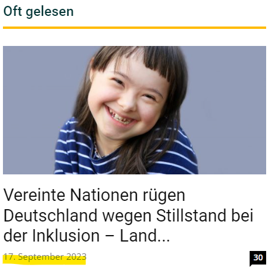

install.packages("rvest")
library(rvest)Einleitung
Mein wertgeschätzter Kollege Timo Lüke1 hat einst im Rahmen einer Medieninhaltsanalyse deutschsprachiger Printmedien (Lüke u. a. 2014) folgende Forschungsfragen aufgeworfen:
- Welches Verständnis von Inklusion wird in den deutschen meinungsführenden Medien kommuniziert?
- Welche Argumente für und gegen die Umsetzung von Inklusion werden genannt?
- Welche Fallbeispiele werden als Belege angeführt?
“Im Rahmen einer systematischen Inhaltsanalyse (Rössler, 2010) deutscher Printmedien untersuchen wir die öffentliche Berichterstattung zum Thema „Inklusion”. Dabei wollen wir verbreitete Definitionen, Argumente und Fallbeispiele systematisch erfassen. So sollen langfristig die Analyse des medialen Diskurses und in der Folge eine Versachlichung der kontroversen Debatte über Inklusion ermöglicht werden.” (Lüke u. a. 2014)
Erste Ergebnisse der Medieninhaltsanalyse sind in Form einer Posterpräsentation verfügbar (Lüke u. a. 2014) und ich erlaube mir die Darstellung des interessanten Posters (Abbildung 1).

Ziele
Allgemeine Zielsetzung
Ich möchte die Medieninhaltsanalyse von Lüke u. a. (2014) replizieren sowie erweitern und mich dabei auf die Textinhalte einer Online-Nachrichten- und Diskussionsseite für Lehrkräfte fokussieren, nämlich News4teachers (News4teachers 2022).
Zielsetzung mit R: Web-Scraping und Text-Mining
Ich möchte exemplarisch aufzeigen, wie die einzelnen Projektphasen der Medieninhaltsanalyse mit der Programmiersprache R umgesetzt werden können. Hierfür werden wir uns auf zwei wichtige Arbeitsschritte fokussieren:
Web-Scraping, also eine automatisierte Methode zum Extrahieren der Textinformationen von der Webseite News4teachers. Eine Einführung in das Thema Web-Scraping mit R bieten Wickham, Cetinkaya-Rundel, und Grolemund (2023) (Kap. 252).
Text-Mining: Die mittels Web-Scraping gesammelten Textdaten sollen mit Methoden des Text-Minings analysiert werden. Methoden des Text-Minings fokussieren sich auf die Extraktion von nützlichen Informationen aus unstrukturierten Textdaten. Unstrukturierte Textdaten sind Texte, die nicht in einer festen Datenbankstruktur vorliegen, also z.B. Textinhalte von Webseiten. Mit Methoden des Text-Minings kann auch der sentimentale Ton eines Textinhalts bzw. die im Text vermittelte subjektive Meinung analysiert werden. Das Hauptziel der sogenannten Sentimentanalyse besteht also darin, die in einem Textdokument geäußerten Emotionen und Ansichten bezüglich eines bestimmten Themas zu identifizieren, in unserem Fall also z.B. geäußerte Meinungen zum Thema Inklusion. Eine Einführung in das Thema Text-Mining mit R bieten Silge und Robinson (2017).
News4teachers: Online-Nachrichten- und Diskussionsseite für Lehrkräfte
Bevor wir mit dem Web-Scraping und Text-Mining beginnen, betrachten wir zunächst das Arbeitsmaterial, also die Webinhalte der Webseite News4teachers, und die entsprechende Selbstbeschreibung der Webseite (News4teachers 2022):
“Wer steckt hinter News4teachers?
News4teachers wird von einer Redaktion aus Lehrern und Journalisten betrieben. Die Seite ist ein gemeinsames Projekt von 4teachers, der Service-Plattform von Lehrern für Lehrer, sowie der Agentur für Bildungsjournalismus.
Was ist News4teachers?
News4teachers ist eine Nachrichten- und Diskussionsseite, die sich mit seriösen Berichten, Analysen und Kommentaren an pädagogische Profis und die an Bildungsthemen interessierte Öffentlichkeit richtet. Die Redaktion sichtet täglich die Meldungen aus Politik, Forschung und Gesellschaft. Auf die Seite gelangt alles, was für die Bildung wichtig ist. News4teachers bietet also einen aktuellen Überblick über die relevanten Informationen für Lehrer, Erzieher, Schüler und Eltern. Und zwar: unabhängig und überparteilich.
Was ist die Idee hinter News4teachers?
News4teachers fühlt sich dem klassischen Journalismus verpflichtet. Das heißt konkret: Wir unterwerfen uns den publizistischen Grundsätzen des Deutschen Presserats, dem Pressekodex. Informationen, die auf die Seite gelangen, wurden zuvor von der Redaktion mit der gebotenen Sorgfalt geprüft. Quellen werden stets genannt, Meinung und Bericht voneinander getrennt. News4teachers unterliegt zudem einer Chronistenpflicht: Alles, was für die Bildungsdebatte in Deutschland von Bedeutung ist, wird aktuell berichtet. Regelmäßige Nutzer von News4teachers sind also immer im Bild.” (News4teachers 2022)
Die Redaktion besteht aus folgenden Personen (News4teachers 2023a): Anna Hückelheim, Sonja Mankowsky, Laura Millmann, Nina Odenius, Thomas Zab und Milla Priboschek (Podcast-Redaktion).
Inhalte von News4teachers und potenzielle Leserschaft aus Lehrkräften
News4teachers verspricht eine unabhängige und überparteiliche Berichterstattung zu Bildungsthemen, wahrscheinlich auch zum Thema Inklusion. Die Inhalte sind für die Leserschaft kostenfrei (werbefinanziertes Angebot). Die Inhalte von News4teachers sind außerdem speziell auf Lehrkräfte ausgerichtet. Somit kann angenommen werden, dass ein großer Teil der Leserschaft aus Lehrkräften besteht. Die Internetseite News4teachers hatte folgende Besucherzahlen (Jahr 2023): Mai (54000 Personen), Juni (60000 Personen) und Juli und August jeweils 55000 Personen (Zahlen ermittelt mit: https://neilpatel.com/website-traffic-checker/). Nehmen wir an, dass die Leserschaft von News4teachers zu 75% aus Lehrkräften aus Deutschland bestünde, dann hätten wir bei einer monatlichen Besucherzahl von 55000 Personen eine monatliche Leserschaft von ca. 41250 Lehrkräften (55000 * 0,75 = 41250). In Deutschland gibt es aber laut Mikrozensus 2022 rund 975000 Lehrkräfte an allgemeinbildenden Schulen (Bundesagentur für Arbeit 2022). Die potenzielle News4teachers-Leserschaft aus Lehrkräften (41250 Personen) entspräche dann einem Anteil von ca. 5.64% aller Lehrkräfte an allgemeinbildenden Schulen (55000 / 975000 * 100 = 5.64%). Im dargestellten Szenario würden die Inhalte von News4teachers also pro Monat ca. 5.64% der Lehrkräfte an allgemeinbildenden Schulen in Deutschland erreichen (5 von 100 Lehrkräften lesen News4teachers). Dies sind aber nur vage Vermutungen zur Reichweite von News4teachers unter Lehrkräften an allgemeinbildenden Schulen in Deutschland, unter der Annahme, dass 75% der Leserschaft von News4teachers aus Lehrkräften bestünde.
AUFGREIFEN: [https://www.news4teachers.de/2021/12/liebe-leserin-lieber-leser-ein-wort-zum-jahreswechsel-in-eigener-sache/]
Kommentare und Diskussionen
Die Webseite News4teachers bieten der Leserschaft die Möglichkeit die Inhalte zu kommentieren und zu diskutieren (Abbildung 2 und Abbildung 6). Hierfür formuliert die Redaktion spezifische Richtlinien (News4teachers 2022):
“Gibt’s Regeln für die Leserzuschriften in den Foren?
Grundsätzlich gilt: Niemand hat einen Anspruch darauf, in den Foren zu den einzelnen Artikeln eine eigene Wortmeldung zu veröffentlichen. Die Redaktion legt Wert darauf, nur Leserzuschriften zu veröffentlichen, die erkennbar darauf abzielen, einen inhaltlichen Beitrag zur Diskussion des darüberstehenden Artikels zu leisten. Das bedeutet konkret: Auch für Leserzuschriften gelten die publizistischen Grundsätze des Deutschen Presserats, gilt also der Pressekodex.
Kurzgefasst:
- Wir veröffentlichen keine Leserbeiträge, in denen ungeprüfte, unbelegte oder falsche Tatsachenbehauptungen verbreitet werden.
- Wir veröffentlichen keine Hetze gegen Menschen oder Menschengruppen.
- Wir veröffentlichen keine Werbung, ob nun für Produkte oder Parteien.
- Und wir veröffentlichen keine Links auf unseriöse Quellen.
Wir behalten uns darüber hinaus vor, Leserbriefe, die lediglich der Stimmungsmache dienen, zu löschen. Oder Leserbriefe sinnwahrend zu kürzen.” (News4teachers 2022)
[Hier weitere Erläuterungen einfügen]

Explorative Forschungsfragen
Die Inhalte von der Webseite News4teachers und die Kommentare und Diskussionen der Leserschaft eignen sich eventuell zur Beantwortung folgender Forschungsfragen:
- Auf welche Art und Weise wird das Thema Inklusion auf der Online-Nachrichten- und Diskussionsseite für Lehrkräfte dargestellt?
- Auf welche Art und Weise werden die Inhalte zum Thema Inklusion von der Leserschaft kommentiert und diskutiert?
Web-Scraping
Der erste Arbeitsschritt, hin zum Text-Mining, also hin zur Medieninhaltsanalyse, wird nun das Web-Scraping sein, also die automatisierte Extraktion der Webinhalte (z.B. Textinformationen) von der Webseite News4teachers. Traditionellerweise bzw. altmodischerweise würde man Webinhalte mit der Methode “copy-and-paste” in einen Datensatz übertragen, also z.B. Text von einer Webseite kopieren und anschließend die kopierte Textinformation in einen Datensatz einfügen (z.B. bei Excel). Dieses Verfahren ist aber fehleranfällig, da z.B. die Gefahr besteht, dass aufgrund mangelnder Konzentration falsche oder unvollständige Textinhalte übertragen werden. Web-Scraping ist daher als automatisierte Methode der Extraktion von Webinhalten weniger anfällig für Fehler und somit die Methode der Wahl. Eine Einführung in das Thema Web-Scraping mit R bieten Wickham, Cetinkaya-Rundel, und Grolemund (2023) (Kap. 253).
R-Zusatzpakete
R-Zusatzpaket rvest
Für das Web-Scraping nutzen wir nun das R-Zusatzpaket rvest (Wickham 2022). Der Name des R-Zusatzpaketes ist eine gelungene Anspielung auf das englische Wort harvest (ernten, sammeln), denn wir wollen ja Informationen aus dem Internet sammeln (mit R). Das kreative Wortspiel ist auch im Logo des R-Zusatzpaketes visualisiert (Abbildung 3). Zunächst müssen wird das R-Zusatzpaket installieren und laden.

Das R-Zusatzpaket rvest verfügt über eine umfassende und hilfreiche Online-Dokumentation:
R-Zusatzpaket tidyverse
Das R-Zusatzpaket tidyverse (Wickham u. a. 2019) ist eine Zusammenstellung unterschiedlicher R-Zusatzpakete. Auch das R-Zusatzpaket rvest ist Bestandteil des R-Zusatzpakets tidyverse. Wir werden an diversen Stellen die herausragende Funktionalität des R-Zusatzpaketes tidyverse nutzen. An den entsprechenden Stellen wird ein Verweis auf die R-Zusatzpakete erfolgen. Informationen zum R-Zusatzpaket tidyverse findet man hier:
Wir installieren und laden das R-Zusatzpaket:
install.packages("tidyverse")
library(tidyverse)Struktur und Inhalte der Webseite
Ziel des Web-Scapings wird es sein, die relevanten Webinhalte von News4teachers automatisiert zu extrahieren. Hierfür müssen wir uns erstmal einen Überblick über die Struktur und Inhalte der Webseite verschaffen. Die Beiträge auf den Internetseiten von News4teachers haben eine spezifische Struktur mit spezifischen Webinhalten. Wir betrachten den Beitrag mit dem Titel “„Schämt Euch!” – Deutschland steht vor den Vereinten Nationen am Pranger, weil es die Inklusion an Schulen praktisch verweigert” (News4teachers 2023b). Für unsere Forschungsfragen mehr oder weniger interessante Webinhalte sind in den Abbildungen kenntlich gemacht (Abbildung 4, Abbildung 5 und Abbildung 6).


[Erläuterungen zu den Abbildungen und Inhalten hinzufügen]
Erster Web-Scraping-Versuch
Zuvor haben wir uns einen Überblick über die zu extrahierenden Webinhalte verschafft. Für den ersten Web-Scraping-Versuch nutzen wir weiterhin den Beitrag mit dem Titel “„Schämt Euch!” – Deutschland steht vor den Vereinten Nationen am Pranger, weil es die Inklusion an Schulen praktisch verweigert” (Abbildung 4). Dies ist der Link zum Beitrag:
Wir nutzen den Befehl read_html() und den entsprechenden Link, um sämtliche Informationen von der Webseite zu extrahieren:
html <- read_html("https://www.news4teachers.de/2023/08/schaemt-euch-deutschland-steht-vor-den-vereinten-nationen-am-pranger-weil-es-die-inklusion-an-schulen-verweigert/")
#html <- read_html("https://www.news4teachers.de/2012/02/im-kern-sind-wir-uns-einig-kein-streit-mehr-uber-die-struktur/")
#html <- read_html("https://www.news4teachers.de/2019/03/mobbing-ritual-unter-grundschuelern-bringt-politik-in-bewegung/")Alle Webinhalte sind nun im Objekt html hinterlegt. Wir sind allerdings nur an spezifischen Webinhalten interessiert und möchten daher im nächsten Schritt einen spezifischen Textinhalt aus dem Objekt html auslesen. Beginnen wir mit einem Textinhalt, welcher sich relativ leicht extrahieren lässt. Wir wollen den Titel des Beitrages extrahieren: “„Schämt Euch!” – Deutschland steht vor den Vereinten Nationen am Pranger, weil es die Inklusion an Schulen praktisch verweigert”. Dabei ist es gar nicht so leicht, einen spezifischen Inhalt wie den Titel zu lokalisieren und auszulesen. Hierfür ist HTML-4 und CSS-Selector-Grundlagenwissen5 hilfreich. Die eigentlichen Textinhalte sind nämlich im HTML-Dokument der Webseite hinterlegt. Ist eine Internetseite im Browser geöffnet, so gelangen wir mit einem Rechtsklick i.d.R. zur Option “Seitenquelltext anzeigen” (Abbildung 7). Dies führt uns zum HTML-Dokument der Webseite (Abbildung 8).


Das HTML-Dokument (Abbildung 8) ist riesig (mehr als 10000 Zeilen) und wir müssen etwas stöbern, um den passenden Webinhalt zu lokalisieren. Der HTML-Code aus Abbildung 8 ist zwecks besserer Lesbarkeit auch nachfolgend dargestellt:
<article id="post-132285" class="post-132285 post type-post status-publish format-standard has-post-thumbnail category-leben category-titelthema category-wissenschaft tag-forderschulen tag-inklusion tag-un-behindertenrechtskonvention" itemscope itemtype="https://schema.org/Article">
<div class="td-post-header">
<!-- category -->
<ul class="td-category">
<li class="entry-category"><a href="https://www.news4teachers.de/bildung/leben/">Leben</a></li>
<li class="entry-category"><a href="https://www.news4teachers.de/bildung/titelthema/">Titelthema</a></li>
<li class="entry-category"><a href="https://www.news4teachers.de/bildung/wissenschaft/">Wissen</a></li>
</ul>
<header class="td-post-title">
<h1 class="entry-title">„Schämt Euch!“ – Deutschland steht vor den Vereinten Nationen am Pranger, weil es die Inklusion an Schulen praktisch verweigert</h1>
<div class="td-module-meta-info">
<!-- author -->
<!-- date -->
<span class="td-post-date">
<time class="entry-date updated td-module-date" datetime="2023-08-29T12:46:06+02:00">29. August 2023</time>
</span>
<!-- comments -->
<div class="td-post-comments">
<a href="https://www.news4teachers.de/2023/08/schaemt-euch-deutschland-steht-vor-den-vereinten-nationen-am-pranger-weil-es-die-inklusion-an-schulen-verweigert/#comments">
<i class="td-icon-comments"></i>150
</a>
</div>
<!-- views -->
</div>
</header>
</div>
</article>Wir sehen z.B. in der Zeile 1297 (Abbildung 8), dass der Titel des Beitrages ein h1-HTML-Element6 ist (header 1: Überschrift erster Ebene):
<h1 class="entry-title">„Schämt Euch!“ – Deutschland steht vor den Vereinten Nationen am Pranger, weil es die Inklusion an Schulen praktisch verweigert</h1>Diese Information benötigen wir, um den Titel des Beitrags gezielt auszulesen. Hierfür nutzen wir den Befehl html_elements("h1") und übergeben das Objekt html an diesen Befehl.
html |> html_elements("h1"){xml_nodeset (1)}
[1] <h1 class="entry-title">„Schämt Euch!“ – Deutschland steht vor den Verein ...Die Information <h1 class="entry-title"> ist überflüßig, da wir nur am HTML-Textinhalt interessiert sind. Daher extrahieren wir den reinen Textinhalt, also den Titel, mit dem Befehl html_text(). Die Befehlskette wird entsprechend erweitert:
html |>
html_elements("h1") |>
html_text()[1] "„Schämt Euch!“ – Deutschland steht vor den Vereinten Nationen am Pranger, weil es die Inklusion an Schulen praktisch verweigert"Herzlichen Glückwunsch! 🥳 Somit haben wir erfolgreich alle Informationen von der Webseite extrahiert und eine relevante Textstelle (den Titel) ausgelesen.
Datenstruktur
Im Seitenquelltext (Abbildung 8) sehen wir, dass anscheinend jeder Beitrag über eine ID verfügt (id="post-132285"). Wenn wir in unserem zukünftigen Datensatz mehrere Beiträge abspeichern wollen, dann wird eine ID-Variable zwecks Unterscheidung der Beiträge eine hilfreiche Sache sein. Tabelle 1 ist eine erste Idee bezüglich einer möglichen/sinnvollen Datenstruktur. Bei dieser Datenstruktur ignorieren wir der Einfachheit halber vorerst ein paar relevante Webinhalte (z.B. Kommentare und Anzahl der Likes).
id | datum | ort | titel | zusammenfassung | text | usw. |
|---|---|---|---|---|---|---|
132285 | 29. August 2023 | GENF | 'Schämt Euch!' -- Deutschland steht vor den Vereinten Nationen am Pranger... | „Schämt Euch!“ – so heißt es auf einem Transparent... | Der offizielle Beitrag Deutschlands fällt dünn aus... | ... |
... | ... | ... | ... | ... | ... | ... |
... | ... | ... | ... | ... | ... | ... |
HINZUFÜGEN [LINK, LIKES]
Weitere Web-Scraping-Schritte
Um die Datenstruktur aus Tabelle 1 zu realisieren, müssen wir nun die ID des Beitrags, das Erscheinungsdatum, die Zusammenfassung und den eigentlichen Haupttext des Beitrages auslesen (den Titel haben wir ja bereits erfolgreich extrahiert). Beginnen wir mit der ID.
ID
In Abbildung 8 sehen wir, das die ID des Beitrages (id="post-132285") ein Attribut7 eines HTML-Elements ist (HTML-Element: article8):
<article id="post-132285" class="post-132285 post type-post status-publish format-standard has-post-thumbnail category-leben category-titelthema category-wissenschaft tag-forderschulen tag-inklusion tag-un-behindertenrechtskonvention" itemscope itemtype="https://schema.org/Article">Daher übergeben wir das Objekt html zwecks Auslesung der ID zunächst an den Befehl html_elements("article") und dann an den Befehl html_attr("id"):
html |>
html_elements("article") |>
html_attr("id")[1] "post-132285"Die ID des Beitrags erscheint mit dem Präfix "post-", eine nicht notwendigerweise nützliche Information. Das Präfix entfernen wir daher mit dem Befehl str_remove("post-") und überführen die ID mit dem Befehl as.numeric() in ein nummerisches Format. Somit erhalten wir die nummerische ID 132285:
html |>
html_elements("article") |>
html_attr("id") |>
str_remove("post-") |> # R-Zusatzpaket stringr (tidyverse)
as.numeric()[1] 132285Erscheinungsdatum
Fahren wir fort mit dem Auslesen des Erscheinungsdatums des Beitrages. Im Quelltext (Abbildung 8, Zeile 1301) erscheint folgende Information:
<span class="td-post-date"><time class="entry-date updated td-module-date" datetime="2023-08-29T12:46:06+02:00" >29. August 2023</time></span> Wir sehen, dass das Datum ein HTML-Element ist, nämlich ein time-Element9. Dieses time-Element ist innerhalb eines span-Elements10 geschachtelt. Wir können hier also von einer hierarchischen Schachtelung der HTML-Elemente sprechen (span -> time, Abbildung 9).

span und timeEntsprechend erfolgt die Extraktion des Datums mit der Übergabe des Objektes html, zunächst an den Befehl html_elements("span"), und anschließend an den Befehl html_elements("time"):
html |>
html_elements("span") |>
html_elements("time"){xml_nodeset (7)}
[1] <time class="entry-date updated td-module-date" datetime="2023-08-29T12:4 ...
[2] <time class="entry-date updated td-module-date" datetime="2023-09-25T15:0 ...
[3] <time class="entry-date updated td-module-date" datetime="2023-09-24T12:3 ...
[4] <time class="entry-date updated td-module-date" datetime="2023-09-25T14:5 ...
[5] <time class="entry-date updated td-module-date" datetime="2023-09-21T12:5 ...
[6] <time class="entry-date updated td-module-date" datetime="2023-09-20T14:3 ...
[7] <time class="entry-date updated td-module-date" datetime="2023-09-19T13:4 ...Das Ergebnis ist aber nicht ganz befriedigend, da mehrere Datumsangaben extrahiert worden sind, unter anderem das gewünschte Erscheinugsdatum des Beitrages (2023-08-29), aber auch andere, nicht relevate Datumsangaben (z.B. 2023-09-17), welche ebenfalls auf der Webseite erscheinen (Abbildung 10).

Wir müssen daher beim Auslesen noch genauer die hierarchische Position des Erscheinungsdatums definieren. Ein Blick auf Abbildung 8 offenbart, dass die beiden HTML-Elemente span und time innerhalb des bereits bekannten HTML-Elements article geschachtelt sind (article -> span -> time, Abbildung 11).

article, span und timeDiese hierarchische Schachtelung (article -> span -> time) muss daher beim Auslesen des Erscheingsdatums beachtet werden:
html |>
html_elements("article") |>
html_elements("span") |>
html_elements("time"){xml_nodeset (1)}
[1] <time class="entry-date updated td-module-date" datetime="2023-08-29T12:4 ...Das Erscheinungsdatum ist in diesem Falle das einzige time-Element innerhalb des article-Elements. Daher führt auch das Weglassen des span-Elements und somit die Anwendung einer reduzierten hierarchischen Schachtelung der HTML-Elemente (article -> time, Abbildung 12) zum gewünschten Erfolg:

article und timehtml |>
html_elements("article") |>
html_elements("time"){xml_nodeset (1)}
[1] <time class="entry-date updated td-module-date" datetime="2023-08-29T12:4 ...Auch bei der Datumsangabe wollen wir uns auf die wesentliche Information fokussieren und extrahieren daher die reine Datumsangabe, die dem Attribut "datetime" zugeordnet ist. Die Befehlskette wird daher um den Befehl "html_attr("datetime")" ergänzt:
html |>
html_elements("article") |>
html_elements("time") |>
html_attr("datetime")[1] "2023-08-29T12:46:06+02:00"Die Datumsangabe ("2023-08-29T12:46:06+02:00") beinhaltet eine für uns nicht relevante Zeitangabe, also die genaue Uhrzeit der Beitragserscheinung (T12:46:06+02:00). Die ersten 10 Zeichen (inkl. Bindestriche: JJJJ-MM-TT/2023-08-29) beibehalten die relevante Datumsangabe. Die nicht relevante Zeitangabe entfernen wir, indem wir lediglich die ersten 10 Zeichen der Datumsangabe beibehalten. Hierfür ergänzen wir die Befehlskette um den Befehl str_sub(end = 10):
html |>
html_elements("article") |>
html_elements("time") |>
html_attr("datetime") |>
str_sub(end = 10) # R-Zusatzpaket stringr (tidyverse)[1] "2023-08-29"Ort der Berichterstattung
Die Ortsangabe ist Bestandteil der Zusammenfassung (siehe Abbildung 4) und die Zusammenfassung ist ein Absatz, i.d.R. der erste Absatz des Beitrages. Für die Extraktion der Ortsangabe ist daher das HTML-Element für Absätze notwendig (p11; p steht für “paragraph”). Dieses HTML-Element (p) ist wie gewohnt innerhalb des HTML-Elements article geschachtelt. Zur Extraktion des ersten Absatzes wird diesmal der Befehl html_element("p") anstatt html_elements("p") genutzt. html_elements("p") würde alle Absätze des Beitrages extrahieren; Wir benötigen aber nur den ersten Absatz mit der Ortsangabe. Die Befehlskette gestaltet sich daher wie folgt:
html |>
html_elements("article") |>
html_element("p") |> # html_element anstatt html_elements
html_text()[1] "GENF. „Schämt Euch!“ – so heißt es auf einem Transparent, das Aktivistinnen und Aktivisten des Berliner Bündnisses für schulische Inklusion vor dem Palais der Vereinten Nationen in Genf platziert haben. Und: „Deutschland verweigert das Menschenrecht auf inklusive Bildung.“ Der Ort des Protests, zu dem Dutzende von Initiativen aufgerufen haben, ist kein Zufall: Heute und morgen findet hier eine sogenannte Staatenprüfung statt, in der Deutschland im Mittelpunkt steht – genauer: das Engagement, das die Bundesrepublik zeigt, um die UN-Behindertenrechtskonvention umzusetzen. Die Kritik daran ist scharf."Somit sehen wir den Absatz mit der Ortsangabe. Wir benötigen allerdings nur die Ortsangabe, also das erste Wort des Absatzes. Hinter der Ortsangabe steht ein Punkt (GENF.). Mit dem Befehl str_extract("[^.]+")12 extrahieren wir alle Zeichen vor dem ersten Punkt, also die Ortsangabe GENF. Die Befehlskette gestaltet sich daher wie folgt:
html |>
html_elements("article") |>
html_element("p") |> # html_element anstatt html_elements
html_text() |>
str_extract("[^\\.]+") # R-Zusatzpaket stringr (tidyverse)[1] "GENF"Zusammenfassung des Beitrages
Wie soeben bei der Extraktion der Ortsangabe erwähnt, ist die Zusammenfassung des Beitrages der erste Absatz des Textes (siehe Abbildung 4). Der erste Absatz wurde soeben folgendermaßen extrahiert:
html |>
html_elements("article") |>
html_element("p") |> # html_element anstatt html_elements
html_text()[1] "GENF. „Schämt Euch!“ – so heißt es auf einem Transparent, das Aktivistinnen und Aktivisten des Berliner Bündnisses für schulische Inklusion vor dem Palais der Vereinten Nationen in Genf platziert haben. Und: „Deutschland verweigert das Menschenrecht auf inklusive Bildung.“ Der Ort des Protests, zu dem Dutzende von Initiativen aufgerufen haben, ist kein Zufall: Heute und morgen findet hier eine sogenannte Staatenprüfung statt, in der Deutschland im Mittelpunkt steht – genauer: das Engagement, das die Bundesrepublik zeigt, um die UN-Behindertenrechtskonvention umzusetzen. Die Kritik daran ist scharf."Somit erhalten wir die Zusammenfassung mit der Ortsangabe inkl. Punkt (GENF.). Nun wollen wir die überflüssige Ortsangabe entfernen und nur die eigentliche Zusammenfassung beibehalten. Dies erreichen wir mit dem Befehl str_extract("\\.[\\s](.*)"). Die kryptische Formel "\\.[\\s](.*)"13 hat folgende Bedeutung:
\\.Suche und extrahiere Zeichen nach dem ersten Punkt[\\s]Die extrahierten Zeichen können Leerzeichen sein (“s” steht für “space”)(.*)Extrahiere außerdem alle weiteren Zeichen
Die Befehlskette gestaltet sich daher wie folgt:
html |>
html_elements("article") |>
html_element("p") |> # html_element anstatt html_elements
html_text() |>
str_extract("\\.[\\s](.*)") # R-Zusatzpaket stringr (tidyverse)[1] ". „Schämt Euch!“ – so heißt es auf einem Transparent, das Aktivistinnen und Aktivisten des Berliner Bündnisses für schulische Inklusion vor dem Palais der Vereinten Nationen in Genf platziert haben. Und: „Deutschland verweigert das Menschenrecht auf inklusive Bildung.“ Der Ort des Protests, zu dem Dutzende von Initiativen aufgerufen haben, ist kein Zufall: Heute und morgen findet hier eine sogenannte Staatenprüfung statt, in der Deutschland im Mittelpunkt steht – genauer: das Engagement, das die Bundesrepublik zeigt, um die UN-Behindertenrechtskonvention umzusetzen. Die Kritik daran ist scharf."Die Ortsangabe (GENF) wurde erfolgreich entfernt. Der Punkt hinter der Ortsangabe (GENF.) wurde allerdings nicht entfernt und bleibt bestehen. Die Zusammenfassung beginnt daher nun mit einem Punkt (.) gefolgt von einem Leerzeichen. Wir entfernen den Punkt und das Leerzeichen (". ") mit dem Befehl str_remove(". "). Die Befehlskette zur Extraktion der Zusammenfassung gestaltet sich daher folgendermaßen:
html |>
html_elements("article") |>
html_element("p") |> # html_element anstatt html_elements
html_text() |>
str_extract("\\.[\\s](.*)") |> # R-Zusatzpaket stringr (tidyverse)
str_remove(". ") # R-Zusatzpaket stringr (tidyverse)[1] "„Schämt Euch!“ – so heißt es auf einem Transparent, das Aktivistinnen und Aktivisten des Berliner Bündnisses für schulische Inklusion vor dem Palais der Vereinten Nationen in Genf platziert haben. Und: „Deutschland verweigert das Menschenrecht auf inklusive Bildung.“ Der Ort des Protests, zu dem Dutzende von Initiativen aufgerufen haben, ist kein Zufall: Heute und morgen findet hier eine sogenannte Staatenprüfung statt, in der Deutschland im Mittelpunkt steht – genauer: das Engagement, das die Bundesrepublik zeigt, um die UN-Behindertenrechtskonvention umzusetzen. Die Kritik daran ist scharf."Text
html |>
html_elements(xpath = "//article/div/p[not(descendant::a)]") |>
html_text()
all_p <-
html |>
html_elements("article") |>
html_elements("p")
link <- all_p |>
as.character() |>
str_detect("</a>")
n4t_link <- all_p |>
as.character() |>
str_detect("News4teachers berichtete")
all_p[!link | n4t_link] |>
html_text()
html |>
html_elements("article") |>
html_elements("p") |>
print()https://rvest.tidyverse.org/reference/html_element.html
You can use !=, [foo!=bar] is the same as :not([foo=bar])
:not() accepts a sequence of simple selectors, not just a single simple selector.
Literatur
Bundesagentur für Arbeit. 2022. Statistik der Bundesagentur für Arbeit. Berichte: Blickpunkt Arbeitsmarkt (Online-Bericht) – Akademiker/-innen. https://statistik.arbeitsagentur.de/DE/Statischer-Content/Statistiken/Themen-im-Fokus/Berufe/AkademikerInnen/Berufsgruppen/Generische-Publikationen/2-8-Lehrkraefte.pdf?__blob=publicationFile&v=3.
Lüke, Timo, Matthias R. Hastall, Christian Marschler, und Michael Grosche. 2014. „Was liest man über Inklusion?“ https://doi.org/10.6084/M9.FIGSHARE.1252227.
News4teachers. 2022. „Über uns“. News4teachers. https://www.news4teachers.de/uber-uns/.
———. 2023a. „Impressum“. News4teachers. https://www.news4teachers.de/impressum/.
———. 2023b. „„Schämt euch!" – Deutschland steht vor den Vereinten Nationen am Pranger, weil es die inklusion an Schulen Praktisch Verweigert“. News4teachers. https://www.news4teachers.de/2023/08/schaemt-euch-deutschland-steht-vor-den-vereinten-nationen-am-pranger-weil-es-die-inklusion-an-schulen-verweigert/.
Silge, Julia, und David Robinson. 2017. Text Mining with R. Sebastopol, CA: O’Reilly Media. https://www.tidytextmining.com/.
Wickham, Hadley. 2022. „rvest: Easily Harvest (Scrape) Web Pages“. https://CRAN.R-project.org/package=rvest.
Wickham, Hadley, Mara Averick, Jennifer Bryan, Winston Chang, Lucy D’Agostino McGowan, Romain François, Garrett Grolemund, u. a. 2019. „Welcome to the tidyverse“ 4: 1686. https://doi.org/10.21105/joss.01686.
Wickham, Hadley, Mine Cetinkaya-Rundel, und Garrett Grolemund. 2023. R for data science. 2. Aufl. Sebastopol, CA: O’Reilly Media. https://r4ds.hadley.nz/.
Fußnoten
https://developer.mozilla.org/en-US/docs/Learn/CSS/Building_blocks/Selectors; “CSS includes a miniature language for selecting elements on a page called CSS selectors. CSS selectors define patterns for locating HTML elements, and are useful for scraping because they provide a concise way of describing which elements you want to extract.”, Quelle: https://rvest.tidyverse.org/articles/rvest.html↩︎
https://developer.mozilla.org/en-US/docs/Web/HTML/Element/Heading_Elements↩︎
https://developer.mozilla.org/en-US/docs/Web/HTML/Global_attributes/id↩︎
https://developer.mozilla.org/en-US/docs/Web/HTML/Element/article↩︎
https://developer.mozilla.org/en-US/docs/Web/HTML/Element/time↩︎
https://developer.mozilla.org/en-US/docs/Web/HTML/Element/span↩︎
https://developer.mozilla.org/en-US/docs/Web/HTML/Element/p?retiredLocale=de↩︎
Bei so einer kryptischen Formel (
"[^.]+"bzw."\\.[\\s](.*)") handelt es sich um eine so genannte “regualar expression” (regex). Eine Einführung in diese Thematik findet man hier: https://r4ds.hadley.nz/regexps (Wickham, Cetinkaya-Rundel, und Grolemund 2023, Kap. 16).↩︎Bei so einer kryptischen Formel (
"[^.]+"bzw."\\.[\\s](.*)") handelt es sich um eine so genannte “regualar expression” (regex). Eine Einführung in diese Thematik findet man hier: https://r4ds.hadley.nz/regexps (Wickham, Cetinkaya-Rundel, und Grolemund 2023, Kap. 16).↩︎